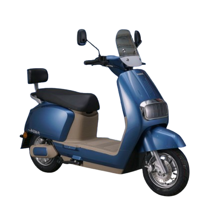

Mobilidade elétrica urbana com robustez real para o Brasil. Autopropelidos e bikes elétricas com baixo custo operacional, peças no país e garantia progressiva de 2 anos. Só a VYA Motors do Brasil tem.
Baixar catálogo
Autopropelidos e bikes elétricas com baixo custo operacional, peças no país e garantia progressiva de 2 anos. Só a VYA Motors do Brasil tem.
Potência do motor
Capacidade de Carga
Headlights Frontal e Traseiro
Custo por km
Transforme sua rotina urbana. Troque o estresse do trânsito pela liberdade.
Esqueça os postos de gasolina. Carregue na tomada de casa gastando centavos e reduza drasticamente os gastos com manutenção. O menor custo por quilômetro rodado do mercado.
Diga adeus ao trânsito parado. Com design compacto e resposta rápida, você corta caminhos, estaciona fácil e transforma o tempo perdido em engarrafamentos em liberdade pura.
Mobilidade limpa sem abrir mão da potência. Zere a emissão de CO2 e poluição sonora. Pilote o futuro hoje, contribuindo para cidades mais silenciosas e respiráveis.
O portfólio VYA combina autopropelidos elétricos para mobilidade urbana e bikes elétricas de alta performance, sempre com baterias de lítio e engenharia pensada para as ruas brasileiras.
Todos os autopropelidos da linha incluem:
Suave, confortável e pronta para o dia a dia.
A VYA Lyke 1000W é um autopropelido elétrico com design italiano e pegada retro. Compacta na medida certa, entrega condução macia para o uso diário e já vem com baú de série.
| Categoria | Autopropelido (Resolução Contran nº 996/2023) |
| Potência | 1000W |
| Autonomia estimada | 45 km |
| Bateria | Lítio 24Ah / 60V (Removível) |
| Tempo de carga | 6 a 8 horas |
| Rodas | Aro 10 |
| Freios | Disco |
| Itens de série | Baú, NFC, LED, Alarme, USB, Cavalete central |
| Brinde | Tapete |
Mobilidade italiana premium para dominar a cidade com estabilidade.
A VYA Vybe 1000W é um autopropelido elétrico urbano com design italiano moderno e presença premium. Pensada para quem quer mobilidade com estilo, segurança e conforto real.
| Categoria | Autopropelido (Resolução Contran nº 996/2023) |
| Potência | 1000W |
| Autonomia estimada | 45 km |
| Bateria | Lítio 24Ah / 60V (Removível) |
| Tempo de carga | 6 a 8 horas |
| Rodas | Aro 12 |
| Freios | Disco |
| Suspensão | Premium |
| Itens de série | NFC, LED, Setas, Tela blindada, Alarme, USB, Porta-objetos, Cavalete central |
| Brinde | Tapete |
Para quem quer mais emoção na cidade, com conforto e controle.
A VYA Hardy 1000W é um autopropelido elétrico de design canadense, pensado para quem gosta de uma pilotagem mais viva e divertida. Entrega condução firme, confortável e estável para o asfalto real das cidades.
| Categoria | Autopropelido (Resolução Contran nº 996/2023) |
| Potência | 1000W |
| Autonomia estimada | 50 km |
| Bateria | Lítio 30Ah / 60V (Removível) |
| Tempo de carga | 6 a 8 horas |
| Rodas | Largas (aro 12) |
| Suspensão | Premium |
| Itens de série | NFC, LED, Setas, Tela blindada, Chave reserva, Alarme, USB, Bluetooth, Suporte celular, Ré |
| Custo por carga | ~ R$ 1,42 |
Moderna, tecnológica e mais alta para dominar a cidade.
A VYA Hyke 1000W é um autopropelido elétrico com pegada moderna e tecnológica. Mais alta e mais forte, entrega posição de pilotagem elevada e estabilidade superior.
| Categoria | Autopropelido (Resolução Contran nº 996/2023) |
| Potência | 1000W |
| Autonomia estimada | 50 km |
| Bateria | Lítio 30Ah / 60V (Removível) |
| Tempo de carga | 6 a 8 horas |
| Rodas | Aro 12 |
| Freios | Disco |
| Suspensão | Premium |
| Itens de série | NFC, LED, Setas, Tela blindada, Alarme, USB, Bluetooth, Porta-treco, Baú, Ré, Cavalete central |
| Custo por carga | ~ R$ 1,42 |
Leve, ágil e eficiente para rodar todo dia.
A VYA Fly é uma moto elétrica urbana compacta, feita para deslocamentos diários com pilotagem simples e econômica. Entrega controle e segurança no trânsito real da cidade.
| Categoria | Autopropelido (Resolução Contran nº 996/2023) |
| Potência | 1000W |
| Autonomia estimada | 45 km |
| Bateria | Lítio 24Ah / 60V (Removível) |
| Tempo de carga | 6 a 8 horas |
| Rodas | Aro 10 |
| Freios | Disco nas duas rodas |
| Itens de série | NFC, LED, Setas, Tela blindada, Chave reserva, Alarme, Tomada USB |
A e-bike de trilha que transforma qualquer caminho em diversão.
A VYA GT2000 é uma bike elétrica de alta autonomia com perfil de trilha: grande, rápida e pronta para aventura. Com arquitetura 48V e bateria de lítio 30Ah, entrega alcance para explorar a cidade e sair do asfalto quando quiser.
| Categoria | Bike elétrica |
| Arquitetura elétrica | 48V |
| Autonomia estimada | 50 km |
| Bateria | Lítio 30Ah / 48V (Removível) |
| Tempo de carga | 6 a 8 horas |
| Perfil | Trilha / urbana esportiva |
| Uso recomendado | Aventura urbana, lazer e trajetos longos |
| Modelo | Categoria | Potência / Arq. | Bateria | Autonomia | Carga | Custo/Carga | Custo/km | Destaque |
|---|---|---|---|---|---|---|---|---|
| Lyke 1000W | Autopropelido | 1000W / 60V | 24Ah / 60V | 45 km | 6–8h | R$ 1,26 | ≈ R$ 0,03 | Retro suave + baú |
| Vybe 1000W | Autopropelido | 1000W / 60V | 24Ah / 60V | 45 km | 6–8h | R$ 1,26 | ≈ R$ 0,03 | Premium urbano + porta-objetos |
| Fly | Autopropelido | 60V | 24Ah / 60V | 45 km | 6–8h | R$ 1,26 | ≈ R$ 0,03 | Compacta ágil + disco duplo |
| Hardy 1000W | Autopropelido | 1000W / 60V | 30Ah / 60V | 50 km | 6–8h | R$ 1,42 | ≈ R$ 0,03 | Enérgica + BT + Ré |
| Hyke 1000W | Autopropelido | 1000W / 60V | 30Ah / 60V | 50 km | 6–8h | R$ 1,42 | ≈ R$ 0,03 | Modern tech + Baú + Ré |
| GT2000 48V | Bike elétrica | 48V | 30Ah / 48V | 50 km | 6–8h | A definir | A definir | Trilha grande, rápida e divertida |
Nota: Autopropelidos seguem a Resolução Contran nº 996/2023 (sem emplacamento/habilitação). A VYA recomenda uso de capacete e EPI.